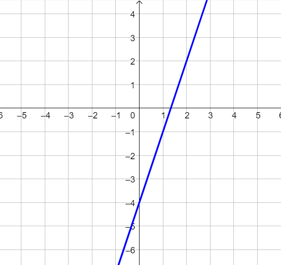

Dato l'insieme di rette dipendenti dal parametro \(k\)
\[
s_{k}:\quad kx + \dfrac{5k -2}{7k - 4}y + \dfrac{1}{k} = 0
\]
Stabilire per quali valori di \(\boldsymbol{k}\) si ottiene una retta parallela a quella di equazione
\[
6x - y + 2 = 0
\]
Soluzione
Se \(k = \dfrac{-13 \pm \sqrt{253}}{7}\) si ottengono rette parallele a quella assegnata dal testo.
Svolgimento
Esercizio 2
Individuare l'equazione della retta \(r\) passante per il punto \(A\), intersezione tra le rette
\[
p:\quad y = 2x - 6
\]
\[
q:\quad -5x + 3y + 2 = 0
\]
ed avente la stessa intersezione con l'asse \(y\) della retta \(t\) di equazione
\[
t:\quad 4x + 5y - 2 = 0
\]
Soluzione:
Il punto \(A\) ha coordinate
\[
(16\,;\,\,26)
\]
La retta \(r\) ha equazione
\[
y = \dfrac{8}{5}x + \dfrac{2}{5}
\]
Esercizio 3
Stabilire quali tra le seguenti rette sono tra loro perpendicolari.
a) \(\,\,\,\, y = 2x + 4\)
b) \(\,\,\,\, -2x + y + 6 = 0\)
c) \(\,\,\,\, 3x + 5y + 2 = 0\)
d) \(\,\,\,\, y = \dfrac{2}{5} + \dfrac{5}{3}x\)
e) \(\,\,\,\, 3y = 5\)
Suggerimento:
Scrivere i coefficienti angolari di ciascuna retta e vedete quali soddisfano la condizione di perpendicolarità.
Esercizio 4
Scrivere l'equazione della retta rappresentata nel seguente grafico.

Suggerimento:
Negli esercizi affrontati fino ad ora era il testo a fornirci informazioni sulla retta.
Ad esempio:
"La retta che devi trovare passa per il punto \(A\) fatto così ed il punto \(B\) fatto cosà".
Oppure:
"la sua intersezione conl l'asse \(y\) è il punto tal dei tali e la retta è parallela alla retta che ha questa equazione"
In questo caso le informazioni riguardanti la retta le deduciamo noi dalla figura.
Potete servirvi di qualsiasi informazione riuscite a ricavare dalla figura.
Di seguito alcune domande per aiutarvi a collezionare informazioni riguardanti la retta:
potete elencare quattro punti che appartengono alla retta?
si riesce a dedurre il coefficiente angolare direttamente dalla figura?
qual è l'intersezione della retta con l'asse delle \(y\)?